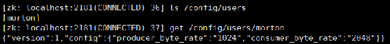
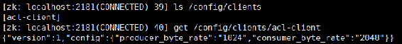
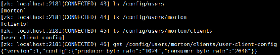

Kafka提供了kafka-configs.sh脚本用于对配置进行管理操作，支持修改配置（--alter）和查看配置（--describe）两个基本操作。该脚本将对配置的增、删、改视为修改配置（--alter）的一种，--add-conifg与--alter指令组合使用，用来实现增加或是修改配置，即不能试图只通过--alter指令去修改配置或只用--add-config指令试图增加一个配置以覆盖该配置的默认值。删除配置（--delete-config）也要与--alter指令组合使用。应用该脚本管理配置需要指定操作配置类型（entity-type），该脚本支持的类型有topics、clients、users和brokers，同时类型（entity-type）与类型名称（entity-name）要一起使用，若指定配置类型为topics，则相应类型名称即为待管理主题的名称。类型与类型名称对应关系解释如表5-5所示。
表5-5 配置类型与配置名称映射关系说明
|
entity-type |
entity-name描述 |
|---|---|
|
topics |
指定主题名称 |
|
clients |
指定客户端id，在producer.properties或consumer.properties中配置的用来跟踪消息的client.id |
|
users |
设置了用户权限控制的用户名 |
|
brokers |
对应Kafka代理的broker.id值 |
该脚本调用kafka.admin.ConfigCommand类对客户端传递参数进行处理，若是修改（--alter）类型操作则在ZooKeeper相应节点进行以下处理。
（1）将相应配置写入/config/<entity-type>/<entity-name>节点中。该信息在ZooKeeper客户端可以通过get /config/<entity-type>/<entity-name>命令查看，元数据格式为{"version":1,"config": {"<property-name>":"<property-value>"}}。这里的<property-name>及<property-value>分别指所设置的配置属性名及属性值，多配置之间满足JSON串格式。增加配置即在JSON中添加一组配置项键值对，删除配置即从JSON串剔除相应的配置。
（2）在/config/changes/节点下创建一个以configchange为前辍，之后连接按序递增的10位数字字符串（记为seqNo，不够10位左补0）作为节点名的节点。通过get /config/changes/config_ change_seqNo命令可查看该节点信息，其数据格式为{"version":2,"entity_path":"<entity-type>/ <entity-name>"}。
若是查看配置信息（--describe）类型操作，则从/config/<entity-type>/<entity-name>节点的元数据信息（{"version":1,"config":{"<property-name>":"<property-value>"}}）中获取config对应的配置，若命令没有传entity-name字段，则默认查看entity-type对应的所有配置信息。
下面依据该脚本所支持的4种配置类型，分别介绍通过该脚本操作配置的具体用法。
在5.2节通过kafka-topics.sh脚本提供的alter与config参数对主题级别的配置操作进行了介绍，但该脚本在未来的版本中将不再支持对配置的操作管理。本小节将通过kafka-configs.sh脚本介绍如何通过该脚本对主题级别的配置进行操作。
查看主题“config-test”已覆盖的配置，命令如下：
kafka-configs.sh --zookeeper server-1:2181,server-2:2181,server-3:2181
--describe --entity-type topics --entity-name config-test # 查看指定主题所有的覆盖配置其中，--describe指定操作指令为查看配置信息操作，--entity-type topics表示所操作的配置类型为主题级别配置，--entity-name指定待操作的主题名。
该命令执行结果输出如下：
Configs for topic 'config-test' are max.message.bytes=204800增加或修改主题“config-test”的主题级别的配置。例如，增加flush.messages配置，命令如下：
kafka-configs.sh --zookeeper server-1:2181,server-2:2181,server-3:2181 --entity
-type topics --entity-name config-test --alter --add-config flush.messages=2其中，alter和add-config参数指定操作指令为增加或修改配置操作，--entity-type topics表示所操作的配置类型为主题级别配置，entity-name参数指定待操作的主题名。该命令支持同时修改多个配置，多个配置之间以逗号分隔。例如，同时修改两个配置，执行命令如下：
kafka-configs.sh –zookeeper server-1:2181,server-2:2181,server-3:2181
--entity-type topics --entity-name config-test --alter --add-config
flush.messages=2,max.message.bytes=102400通过delete-config参数指定删除配置，同样支持同时删除多个配置，多个配置之间以逗号分隔。例如，同时修改两个配置项，则执行命令如下：
kafka-configs.sh --zookeeper 172.117.12.61:2181 --entity-type topics --entity-name
config-test -alter --delete-config flush.messages,max.message.bytesKafka-config.sh脚本提供了对副本传输流量控制的配置，这在分区迁移时很有用，通过对复制流量合理的控制，可以实现数据间的平滑迁移。
该脚本在代理级别支持以下两个配置。
当分区重分配动态修改这两个配置时，通常设置这两个配置项的值相同。为了不影响Kafka本身的性能，往往对临时设置的一些限制性的配置在使用完后及时删除。本小节仅介绍如何增加和删除这两个配置，对其流量控制效果的验证将在5.6.2节再进行介绍。
假设对server-1对应的代理（broker.id=1）上分布的Leader副本和Follower副本的复制速率控制为10 MB/s，命令如下：
kafka-configs.sh --zookeeper server-1:2181,server-1:2181,server-1:2181
--entity-type brokers --entity-name 1 --alter --add-config follower.
replication.throttled.rate=10485760,leader.replication.throttled.rate=10485760该命令执行后，输出信息如下：
Updated config for entity: brokers '1'.查看对该代理增加的限制，命令如下：
kafka-configs.sh --zookeeper server-1:2181,server-1:2181,server-1:2181
--entity-type brokers --entity-name 1 –describe输出信息：
Configs for brokers '1' are leader.replication.throttled.rate=10485760,follower.
replication.throttled.rate=10485760删除该配置，命令如下：
kafka-configs.sh --zookeeper server-1:2181,server-1:2181,server-1:2181
--entity-type brokers --entity-name 1 --alter --delete-config
leader.replication.throttled.rate,follower.replication.throttled.rate在主题级别也有两个对Leader副本和Follower副本复制速率进行限制的配置，只不过这两个配置分别用来配置被限制的主题对应的副本列表。例如，对主题kafka-action的Leader副本和Follower副本的复制速率进行设置，具体步骤如下。
首先查看主题kafka-action各分区Leader与Follower分布情况。
kafka-topics.sh --zookeeper server-1:2181,server-1:2181,server-1:2181 --topic
kafka-action –describe输出信息如下：
Topic:kafka-action PartitionCount:3 ReplicationFactor:2 Configs:
Topic: kafka-action Partition: 0 Leader: 1 Replicas: 1,2 Isr: 1,2
Topic: kafka-action Partition: 1 Leader: 2 Replicas: 2,3 Isr: 3,2
Topic: kafka-action Partition: 2 Leader: 3 Replicas: 3,1 Isr: 1,3由以上信息可知，3个分区Leader副本对应的brokerId依次为1、2、3，即分区与代理节点映射关系为[0:1,1:2,2:3]，而副本对应的brokerId依次为2、3、1，同理可得分区副本与代理节点的映射关系为[0:2,1:3,2:1]，由此对该主题设置副本限流的命令如下：
kafka-configs.sh --zookeeper server-1:2181,server-1:2181,server-1:2181
--entity-type topics --entity-name kafka-action --alter --add-config
leader.replication.throttled.replicas=[0:1,1:2,2:3],follower.replication.
throttled.replicas=[0:2,1:3,2:1]当前版本的Kafka在客户端级别以及用户级别仅支持配置生产者每秒最多写入消息的字节数（producer_byte_rate）和消费者每秒拉取消息的字节数（consumer_byte_rate），我们简称为流控设置。下面简单介绍对用户级别以及客户端级别流控设置的基本用法。
执行以下命令，给用户morton配置生产者和消费者流量控制，这里的用户是通过Kafka身份认证创建的用户，在5.9节有详细介绍。
kafka-configs.sh --zookeeper localhost:2181 --alter --add-config 'producer_byte_
rate=1024,consumer_byte_rate=2048' --entity-type users --entity-name morton该命令执行后，会在ZooKeeper的/config/users路径下创建一个morton节点，并将相应的限流信息存储在该节点中，如图5-9所示。

图5-9 ZooKeeper存储的用户级别的流控元数据信息
执行以下命令，查看对用户morton添加的流控信息：
kafka-configs.sh --zookeeper localhost:2181 --describe --entity-type users输出流控信息：
Configs for user-principal 'morton' are producer_byte_rate=1024,consumer_byte_rate=2048假设定义一个名为“acl-client”的客户端，对该客户端进行流控设置，这样在客户端创建生产者或消费者情况下通过client.id指定该客户端名称时，这里的流控就会对该生产者或消费者起作用。对客户端配置流控的命令如下：
kafka-configs.sh --zookeeper localhost:2181 --alter --add-config 'producer_byte_
rate=1024,consumer_byte_rate=2048' --entity-type clients --entity-name acl-client该命令执行后，会在ZooKeeper的/config/clients路径下创建一个名为“acl-client”的节点，在该节点中存储与“acl-client”同名的客户端流控信息，如图5-10所示。

图5-10 ZooKeeper存储的客户端级别的流控元数据信息
在对客户端添加流控时，若没有指定用户则表示该配置是对所有用户起作用。当然，可以为某个用户的客户端添加流控，例如执行以下命令为用户morton名为“user-client-config”的客户端添加流控。
kafka-configs.sh --zookeeper localhost:2181 --alter --add-config
'producer_byte_rate=1024,consumer_byte_rate=2048' --entity-type users --entity-name
morton --entity-type clients --entity-name user-client-config该命令执行后，在ZooKeeper中创建的节点及存储的元数据信息如图5-11所示。

图5-11 ZooKeeper中存储的用户morton的客户端流控信息
关于用户级别以及客户端级别的流控操作简单介绍至此。操作命令相对较简单，本例中的流控设置仅是作为讲解演示，在实际业务中应根据具体情况进行设置。